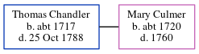

Thomas Chandler c1717 - 1788
[ Home ] | [ Calendar ] | [ Surnames Index ] | [ Errors ] | [ Family History ]Thomas Chandler, the husband of Mary Culmer (the seven times great-aunt of Nigel Horne), was born in Ash, Kent, England c. 1717 and baptised there on 8 Dec 1717. He married Mary there at St Nicholas Church on 21 Oct 17451, which is also where he died on 25 Oct 1788.
Citations
- Kent, England, Tyler Index to Parish Registers, 1538-1874 Online publication - Provo, UT, USA: Ancestry.com Operations, Inc., 2010. This collection was indexed by Ancestry World Archives Project contributors.Original data - Frank Watt Tyler. The Tyler Collection. Canterbury, Kent, England: The Institute of Herald
Media
Kent marriages and banns - GBPRS/CANT/M/97181414/1
Kent marriages and banns - GBPRS/EASTKENT/MAR/162309/1
Family Tree
Map
Generated by ged2site. Last updated on Jul 3, 2024
Known Issues
Birth date (abt 1717) has no citations
Death date (25 Oct 1788) has no citations
Baptism information not used to determine a parent